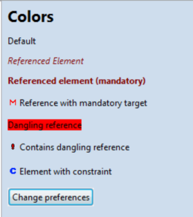
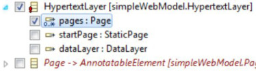
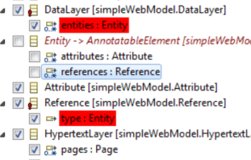
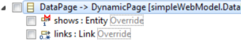
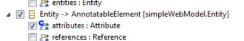
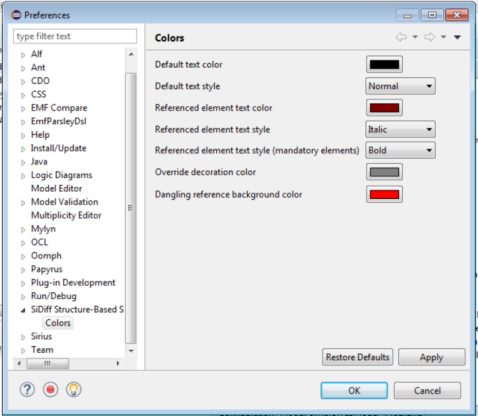

Color Settings
The default colors can be seen in the legend on the right side of the model view.

Default appearance
No changes to the default font or symbols indicate that nothing has been selected yet in the current model.
Referenced Element
If the name of a class appears as red and italic, a selected element references this class. Additionally, a red exclamation mark
appears by the name of the class of the selected element. This indicates that the class contains a dangling reference.

Dangling Reference
A dangling reference is displayed with a red background behind the name of the class. This shows, that an Element has been selected,
but not its super class.

Reference with mandatory target
A red "M" symbol by the name of the element indicates that it has a lower bound of at least one and needs to be referenced.

Constraint
The "C" Symbol indicates that the element has at least one constraint.

Override
"Override" written in grey next to an element shows that the element is defined by a super class and can be
overwritten by a subclass.
To change the color settings, navigate to "SiDiff Structure-Based Slicing Configuration Editor" under "Preferences", then select "Colors".
